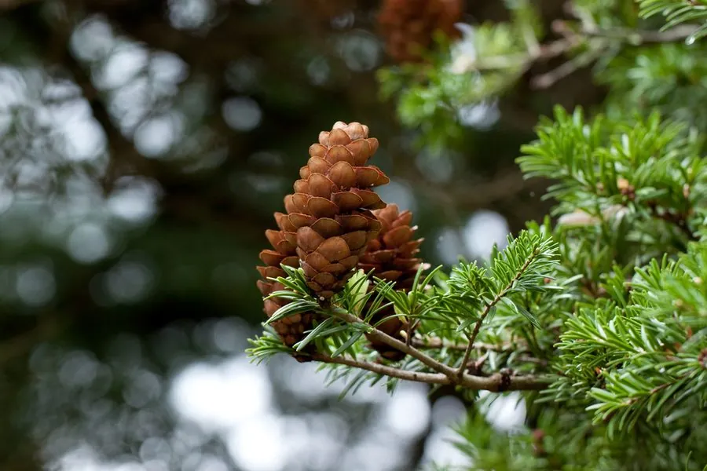

乔木 · 植物界
铁坚油杉 Keteleeria davidiana

松科油杉属常绿乔木，中国特有，树形挺拔，叶条状扁平，球果直立，是长江以南山地重要的用材与景观树种。
- 分类
- 门裸子植物门纲松柏纲目松柏目科松科属油杉属
- 栖息环境
- 海拔 600–1500 米的山地、沟谷与村旁，喜温暖湿润、土壤深厚的环境
- 地理分布
- 中国四川、湖北、湖南、贵州、陕西南部等地，为中国特有种
- 保护级别
- IUCN 暂无评估；中国特有种，野生大树因采伐而减少
物种志
铁坚油杉为常绿乔木，高可达 30 米，胸径可达 1 米，树皮灰褐色并纵裂。叶片条形、扁平，螺旋状着生，在小枝上排列成两列，先端钝尖，叶背有两条白色气孔带。雌雄同株，雄球花簇生，雌球花单生，球果直立、圆柱形，成熟时淡褐色，种鳞木质，种子具宽翅。
本种为中国特有种，分布于四川、湖北、湖南、贵州、陕西南部等地，多生于海拔 600–1500 米的山地、沟谷与村旁，喜温暖湿润气候与深厚肥沃的酸性土壤，幼树稍耐阴，成树喜光。它生长较慢，但寿命长、树形端正，是优良的风景树与四旁绿化树种；木材纹理直、耐腐，可供建筑、桥梁与家具用材。野生种群因采伐与生境破碎化而减少，已受到保护。
形态与习性
- 株高可达 30 米，胸径可达 1 米
- 花期3–4 月，雄球花簇生
- 球果成熟10–11 月，球果直立、淡褐色
- 光照喜光，幼树稍耐阴
- 水分喜湿润，怕长期积水
- 土壤深厚肥沃的酸性黄壤或山地棕壤
- 主要用途建筑与家具用材、四旁绿化与风景树
趣味知识
- 油杉属是东亚特有的孑遗类群，铁坚油杉是其中分布较广的一种。
- 它的球果直立生于枝顶，种鳞成熟后张开，带翅种子随风散落。
- 铁坚油杉木材耐腐、纹理直，民间常用于制作家具与农具。
- 野生大树常被保留在村口与寺庙旁，成为地方的风水树。